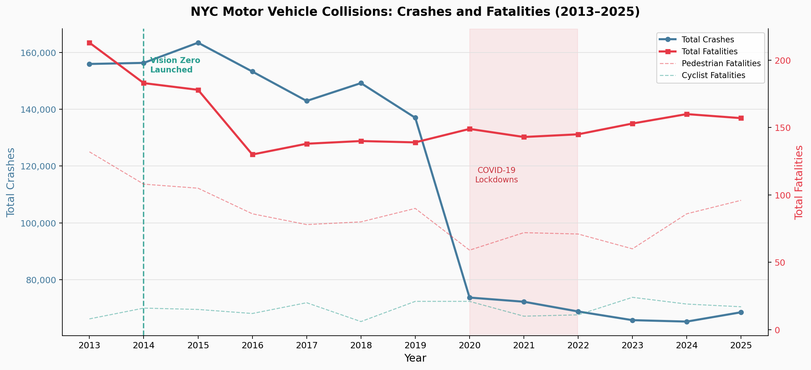

DTU 02806 · Social Data Analysis & Visualization · Project B
In 2014, NYC launched Vision Zero, a bold plan to eliminate traffic deaths. While total crashes have since declined, fatalities have not, revealing a grim paradox: our streets are seeing fewer collisions, but the ones that happen are becoming more severe. This project investigates why.
The Data
Every time a police officer files a crash report in New York City, it flows into a public database on the NYC Open Data portal. This analysis draws on that record: over 1.47 million collisions across the five boroughs from 2013 through 2025, each one tagged with the date, the time, the location, who was hurt, and up to five reasons why it happened.
The scale alone is staggering. A crash every four minutes, on average, for twelve consecutive years. Yet this data holds a troubling paradox: while the total number of crashes has fallen since the city's Vision Zero initiative was launched, the number of fatalities has remained stubbornly high. This suggests the grim possibility that crashes are becoming more severe. This analysis will investigate that paradox, exploring when, where, and why New York's streets remain so dangerous.
Before diving in, one caveat is essential. This is police-reported data. Minor fender-benders often go unrecorded. Collisions in communities with strained police relationships are systematically under-reported (Richardson et al., 2019). Every number that follows represents a lower bound on reality, not the full picture.
The dataset itself has a story. Records before 2013 are sparse and inconsistently formatted; GPS coordinates only became reliable around 2016; contributing-factor fields are left blank in the majority of entries. Cleaning the data (removing partial-year records, filtering to the five named boroughs, and flagging missing coordinates) reduced the raw 2.25 million rows to 1.47 million analysis-ready records. That 35% shrinkage is itself a data-quality finding: nearly one in three crash reports contained information too incomplete to use.
Crashes in our cleaned dataset (2013–2025), filtered to the five boroughs and full calendar years only.
People killed on NYC streets in that period; pedestrians account for more than half of all fatalities.
Only 3% of borough-filtered records lack valid coordinates, far better than the raw dataset's missing-location rate.
With the data in hand, the first question is the most obvious one: has the city actually become safer since Vision Zero launched in 2014? The trend chart below holds the answer, and it is more ambiguous than the policy's proponents would like.
One more framing note before we look at the numbers: this analysis uses fatalities as its primary measure of severity, not injuries. Injuries are far more numerous (over 300,000 across the study period) but they are also far more heterogeneous, ranging from minor whiplash to life-altering spinal damage. Deaths, while rarer, are unambiguous and consistently recorded. They are the metric that Vision Zero itself chose as its north star, and so they are the metric that drives our story.
Figure 1 · The Big Picture
Mayor de Blasio launched Vision Zero in January 2014, pledging to eliminate all traffic deaths by 2024. The initiative poured resources into speed cameras, protected bike lanes, and redesigned dangerous intersections. It was not a vague aspiration: the city committed to specific engineering changes: lowering the default speed limit citywide from 30 mph to 25 mph, installing hundreds of new leading pedestrian intervals at crosswalks, and redesigning the most dangerous intersections through the "Arterial Slow Zone" program.
For a few years, the numbers moved in the right direction: fatalities fell from their 2013 peak through the late 2010s, reaching a then-record low of 202 deaths in 2018, down roughly 32% from the 2013 baseline (see pre/post analysis in the Explainer Notebook, §3e). This is a raw before-and-after trend; confounders such as Uber/Lyft growth and automatic emergency braking adoption in newer vehicles make strict causal attribution to Vision Zero alone impossible without a comparison city. What the data clearly shows is that the decline coincides with the programme's active implementation years. Then 2020 arrived and scrambled everything.

The most direct test of whether crashes are becoming more dangerous is the per-crash fatality rate (deaths per 1,000 collisions). Figure 1b shows that rate over time. It fell after Vision Zero, spiked during COVID as emptied streets invited speed, and has not returned to its pre-pandemic low. Fewer crashes are happening, but each one is more likely to kill.
The pandemic paradox is stark in the NYC data. In 2020, total crashes dropped to their lowest level in the entire dataset, by more than 40% compared to 2019. But the fatality count barely budged. The implication is grim: on near-empty streets, the crashes that did occur were far more severe. With fewer cars, average speeds rose sharply, and research on pedestrian impact biomechanics is unambiguous: the difference between 25 mph and 40 mph is roughly the difference between a survivable strike and a fatal one (Tefft, 2013).
By 2022–2023, as the city returned to something like normal, both crash counts and fatalities rebounded toward pre-pandemic levels. The Vision Zero gains of the mid-2010s were, in the data at least, largely erased. The city-wide trend is alarming. But is this problem uniform across the five boroughs?
The yearly view tells us when the city is improving and when it is not. But city-wide averages conceal critical geography. Two crashes in the same year can look identical in a bar chart, yet one occurs at a congested Midtown intersection and the other on a high-speed outer-borough arterial where there is no pedestrian refuge. To understand where danger actually concentrates, we need a map.
Figure 2 · Where It Happens
The first instinct is to assume the most crowded streets are the deadliest. The data tells a more nuanced story. Dense commercial corridors (lower Manhattan, Downtown Brooklyn, Jamaica in Queens) do concentrate the sheer volume of collisions. But toggle to the fatal crashes layer below, and the hot spots shift outward toward high-speed arterials where pedestrians and fast-moving vehicles meet with little protection.
Queens Boulevard, once nicknamed the "Boulevard of Death," exemplifies the pattern. A twelve-lane expressway-width road that pedestrians must navigate in multiple crossing phases, it was a persistent hotspot for decades before sustained infrastructure investment (medians, extended signal timing, turn restrictions) began to reduce its toll in the 2010s. It is now frequently cited as a Vision Zero success story, but the map reveals that adjacent arterials absorbed some of that displaced risk.
Atlantic Avenue in Brooklyn tells a similar story: it functions as a de facto highway through residential neighbourhoods, with few protected crossings and long signal cycles that reward speeding between lights. Staten Island's arterials (Richmond Avenue, Hylan Boulevard) carry high-speed suburban traffic through corridors built for cars, not the pedestrians and cyclists who also use them.
There is a deeper structural point embedded in this geography. The streets with the highest crash volume (Midtown Manhattan, Downtown Brooklyn) receive the most infrastructure investment, the most redesign attention, and the most political visibility. The streets with the highest lethality are often in lower-density outer-borough areas that attract less attention from planners and press alike. If Vision Zero prioritises crash volume as its targeting metric, it may systematically under-invest in the arterials where the deaths actually happen. With Brooklyn and Queens identified as hotspots, let's examine the reasons behind the crashes.
Knowing where danger concentrates is essential, but it still leaves a practical question unanswered: when is a New Yorker most at risk? Geography is fixed; time of day is something individuals and policymakers can actually act on.
Figure 3 · When It Happens
Crash timing is not random; it mirrors the rhythm of the city itself. Two distinct risk windows appear in every borough: the weekday commute (8–9 AM and 4–6 PM, when traffic volume peaks) and the late-night Friday and Saturday corridor (10 PM to 2 AM, when alcohol-impaired driving surges). What changes between boroughs is not the pattern itself but its shape, and those differences reveal a great deal about how each borough lives.
Consider the contrast between Manhattan and Staten Island. Manhattan's heatmap is relatively uniform across the day, a reflection of its 24-hour activity profile. Bars, restaurants, theaters, and night-shift workers keep the streets active (and occasionally dangerous) well past midnight on any night of the week. Staten Island, by contrast, shows a sharp commute-hour spike and an almost empty late-night grid on weekdays, the pattern of a suburban community that drives to work and comes home to sleep. Its weekend night spike, however, is proportionally large, consistent with the longer driving distances required to access nightlife in other boroughs.
The late-night pattern also has a severe severity dimension that the count-based heatmap cannot show. Per-crash fatality rate analysis (Notebook §3f) shows that late-night Friday and Saturday crashes (10 PM–2 AM) are roughly 3–4× more lethal per collision than weekday morning rush-hour crashes, despite occurring far less frequently. Pedestrian traffic is lower (fewer witnesses, fewer rescuers), emergency response times are longer in less-dense areas, and impaired drivers are far more likely to be travelling at speed. A late-night crash in Staten Island or eastern Queens is a qualitatively different event from an afternoon fender-bender in the Midtown grid.
Timing tells us when to be most vigilant. But it does not tell us why those crashes happen in the first place. For that, we turn to the contributing factors that officers record at every crash scene, a window into cause that is revealing, and also deeply incomplete.
What timing cannot tell us: The dataset contains no weather column. A spike at Friday 10 PM could reflect alcohol-impaired driving, reduced visibility from rain, or simply heavier traffic; the heatmap cannot distinguish. Similarly, a busy hour with many crashes may be safer per vehicle than a quiet hour if traffic volume is also high. True crash-rate analysis requires merging this data with NYC DOT traffic counts or NOAA weather records, which is beyond the scope of this dataset alone.
Figure 4 · Why It Happens
At every crash scene, the responding officer records up to five contributing factors. That field is the closest thing this dataset has to a cause, and looking at it is humbling. Driver inattention and distraction tops the list by a wide margin, a finding consistent with decades of research on the cognitive cost of smartphone use at the wheel (Strayer & Johnston, 2001). A driver glancing at a navigation app for two seconds at 30 mph travels 88 feet, nearly the length of a full city bus, effectively blind. But raw counts tell only part of the story. The chart's Fatality Rate (%) dropdown reveals a different ranking: which factors are most lethal per crash, not merely most common. Factors associated with high-speed intersection conflicts — failure to yield, unsafe speed — rise sharply in that view, because each occurrence is far more likely to end in a death than a distraction-related rear-end tap.
One critical caveat: "Unspecified" (excluded from this chart) was recorded as a factor in the majority of crash records. What you see below represents only the crashes where an officer made an explicit judgment call. Interpret accordingly. The scale of "Unspecified" is itself informative: it suggests that attributing crash causation on the spot, often under pressure and without witness accounts, is genuinely difficult. Many of the crashes labelled "Unspecified" may actually belong to the visible categories we simply cannot know.
The most revealing comparison is switching from All Crashes to Fatal Crashes in the chart below. Across all crashes, the top factors are attention-related: distraction, failure to yield, following too closely. In the fatal-crash view, "Failure to Yield Right-of-Way" rises sharply. This makes intuitive sense: a failure to yield that causes a side-impact or head-on collision at an intersection is far more likely to be lethal than a rear-end distraction crash at low speed. Recall that pedestrians account for over half of all fatalities in this dataset, and a pedestrian crossing on a green light has no defence against a driver who fails to yield.
There is also an important asymmetry in how these factors map to interventions. "Driver inattention" is addressed primarily through education and enforcement: campaigns, handheld device bans, officer discretion. These are slow and uncertain levers. "Failure to yield" and "unsafe speed" are more directly addressable through engineering: protected turn phases, pedestrian refuge islands, raised crosswalks, and lower speed limits change the physical environment in ways that do not depend on any individual driver making a better choice in the moment. The shift in the fatal-crashes factor profile is therefore also an argument for prioritising infrastructure over enforcement.
We now know when, where, and, partially, why. One question remains: does every New Yorker face the same level of risk? The final figure makes the answer emphatically clear: they do not.
Figure 5 · Who Bears the Burden
The question of who bears the burden of traffic danger is not simply a matter of crash counts. It is a question of equity: which communities experience risk as an inescapable part of daily life and which communities have the political and economic capital to demand safer streets. Research on environmental justice consistently finds that lower-income neighbourhoods and communities of colour receive less traffic-safety infrastructure investment even when their crash rates are higher (Smart Growth America, 2023).
Brooklyn leads in raw crash counts, and it also leads in fatalities per 100,000 residents (25.3/100k). Controlling for population does not flip the ranking; it reinforces it. Brooklyn's combination of high population density, a diverse socioeconomic landscape, and high-speed arterials (Atlantic Ave, Flatbush Ave, Nostrand Ave) makes it dangerous in both absolute and relative terms. What the per-capita view does reveal is a methodological insight: Manhattan's per-resident crash rate is the highest of any borough, an artifact of using resident population as the denominator in a borough with massive daytime and tourist traffic.
Staten Island presents a different kind of challenge. Its per-capita fatality rate is comparatively high despite lower absolute numbers, a reflection of its car-dependent infrastructure, higher average travel speeds, and limited public transit alternatives that push residents into vehicles for every trip. The Bronx, meanwhile, has the city's lowest per-capita crash rate in raw numbers, but its residents are disproportionately dependent on walking and transit, meaning that each crash that does occur has a higher probability of involving a pedestrian than in a car-centric borough.
The ideal metric (pedestrian fatalities per pedestrian trip) does not exist in a publicly available borough-level form. But the message is clear even with an imperfect denominator: in Brooklyn, the risk of being killed in a traffic crash is the highest of any borough, whether measured in absolute terms or relative to the people who live there. Behind that number are real streets, real crossings, and real residents who deserve the same infrastructure investment that Manhattan receives as a matter of political attention.
Conclusion
The five figures above trace a single arc. We began with a city that made a bold promise and achieved modest, real progress, with fatalities falling through the mid-to-late 2010s, as Vision Zero redesigned intersections and added speed cameras (Fig 1). We then traced where that risk is concentrated, discovering that the deadliest spots are not the busiest streets but the fastest ones (Fig 2). We mapped when danger peaks, at rush hour and, even more lethally, on weekend nights (Fig 3). We identified why crashes happen, at least partially, and watched the factor profile shift ominously when filtered to fatalities (Fig 4). And we examined who bears the burden: Brooklyn leads in both raw fatality counts and per-capita rates, while Manhattan's crash-rate inflation reveals the limits of resident-population as an exposure denominator (Fig 5).
The COVID pandemic scrambled the trajectory. Crashes collapsed in 2020, but deaths did not fall proportionally, as emptied streets became an invitation to speed. The post-lockdown rebound then erased much of Vision Zero's hard-won progress. The city is, by the data, roughly as dangerous in 2023–2025 as it was a decade ago. This is not simply a NYC story: the same pattern (brief pandemic-era improvement followed by a severe rebound) played out in cities across the US, UK, and much of Europe, suggesting structural forces that transcend local policy choices (WHO, 2023).
What would it take to actually reach zero? The international evidence is instructive. Oslo and Helsinki, cities roughly comparable to NYC in density but not in car culture, recorded zero pedestrian deaths in 2019, the first time any major city had achieved that milestone. Their common ingredients: strict speed limits on all residential streets (30 km/h), extensive pedestrian and cyclist separation, and consistent enforcement backed by automated cameras. None of those elements is absent from Vision Zero's stated agenda. What Oslo and Helsinki had that NYC has struggled to sustain is political continuity: the commitment to maintain and expand interventions across multiple election cycles.
Vision Zero was right about one thing: traffic deaths are not accidents; they are a predictable product of speed, infrastructure, and political will. The data shows that will can move the needle. It also shows how quickly the needle moves back. Whether the city's next decade looks like the hopeful 2010s or the sobering 2020s may depend on whether policymakers treat these numbers as a mandate for action, not merely a record of the past.
The 2,028 lives recorded in this dataset are not statistics; they are the irreducible minimum of what happened, an undercount of the true toll, a snapshot of a system that kills predictably and preventably. The methodology for stopping it is well understood. The barrier is not technical. It is political will, sustained over time, applied with particular urgency in the outer-borough corridors and lower-income neighbourhoods where the burden falls hardest and the advocacy is quietest.
For the full data cleaning pipeline, EDA code, and methodological discussion, see the Explainer Notebook linked below.
📓 Open Explainer Notebook